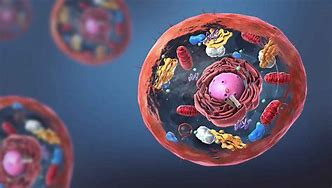

เซลล์ เป็นโครงสร้างและหน่วยการทำงานพื้นฐานที่สุดของสิ่งมีชีวิตทุกชนิดที่ทราบกัน เซลล์เป็นหน่วยย่อยที่สุดที่จะเรียกว่า "ชีวิต" ได้ ในบางครั้งอาจเรียกว่า"หน่วยโครงสร้างของชีวิต" (the building block of life) การศึกษาเกี่ยวกับเซลล์เรียกว่าชีววิทยาของเซลล์ (cell biology), ชีววิทยาระดับเซลล์, หรือเซลล์วิทยา (cytology)
องค์ประกอบของเซลล์ประกอบด้วย
1. เยื่อหุ้มเซลล์ 2. นิวเคลียส 3. ไรโบโซม 4. เอนโดพลาสมิกเรติคูลัม 5. กอลจิแอพพาราตัส (golgi apparatus) 6. ไลโซโซม (lysosome) 7. เพอโรซิโซม (peroxisome) 8. แวคิวโอล (vacuole) 9. ไมโทคอนเดรีย (mitochondria) 10. คลอโรพลาสต์ (chloroplasts) 11. สารโครงร่างของเซลล์ (cytoskeleton) 12. โครงสร้างผิวเซลล์ (cell surface structure) 13.โครงสร้างเชื่อมต่อระหว่างเซลล์ (junction between cells)
โครงสร้างพื้นฐานของเซลล์
เซลล์มีโครงสร้างพื้นฐานที่สำคัญ 3 ส่วน คือ
1. ส่วนที่ห่อหุ้มเซลล์ แบ่งออกเป็น 1.1 ผนังเซลล์ (Cell Wall) 1.2 เยื่อหุ้มเซลล์ (Cell Membrane) 2. ไซโทพลาซึม (Cytoplasm) ประกอบด้วย 2.1 ไซโทซอล (Cytosol) 2.2 ออร์แกเนลล์ (Organelles) 3. นิวเคลียส (Nucleus) ประกอบด้วย 3.1 เยื่อหุ้มนิวเคลียส (Nuclear Membrane) 3.2 นิวคลีโอพลาซึม (Nucleoplasm) ประกอบด้วย – โครมาทิน (Chromatin) – นิวคลีโอลัส (Nucleolus)